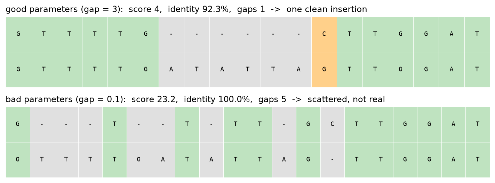
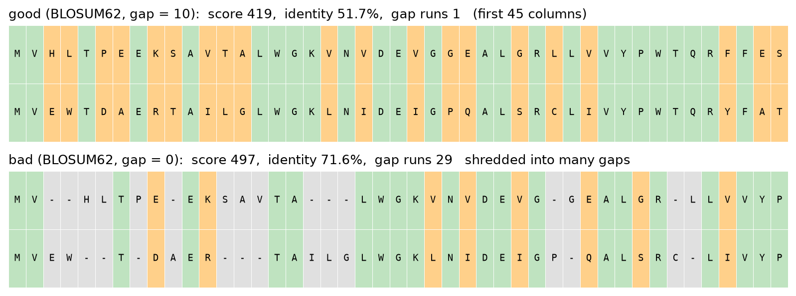
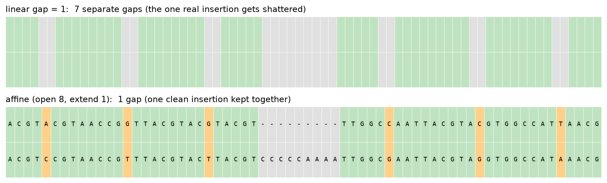
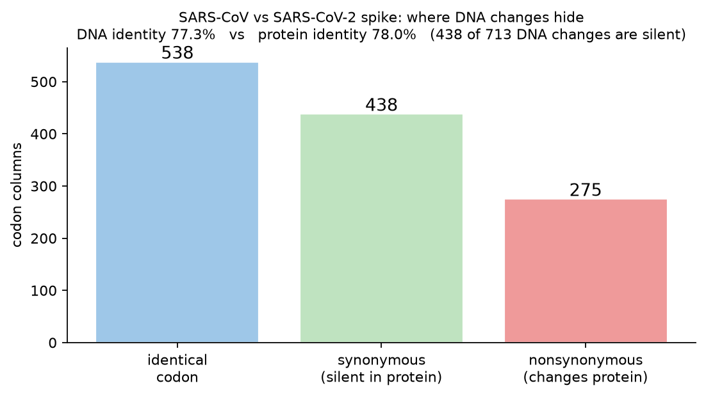
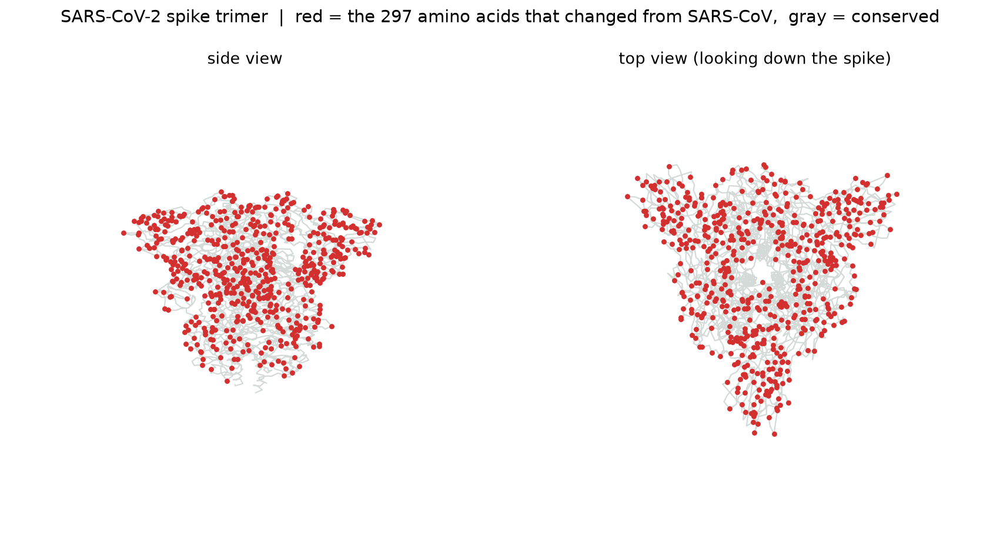

If the alignment you get depends on the scoring numbers you pick, how do you know which alignment is actually right?
We built our own tunable aligner in Python, starting from the global and local alignment code we wrote this module and generalizing it to proteins. Then we used it on real DNA and protein, hemoglobin across species and the SARS spike gene, to figure out what makes one alignment better than another. The short version is that the raw score cannot be the judge, because we chose the numbers that produce it. This page walks through how we know that, and what we trust instead.
Here is the whole problem in miniature. These are the same two short DNA sequences, aligned twice, changing only the gap penalty.

You might think that was an artifact of a tiny made-up example, so we tried it on a real gene: hemoglobin beta, human versus zebrafish, scored with the BLOSUM62 protein matrix.

So even on real biology, the settings that score higher and read as more identical are the ones that are biologically wrong. That is the trap this whole project is about. Open the aligner, load one of these examples, and drag the gap slider down to zero to watch it happen live.
The reason careless gap settings break things is that a single flat gap penalty is asked to do two opposite jobs at once. It has to allow one long real insertion, but block many scattered fake ones. With a linear penalty a gap of length nine costs exactly nine times the penalty, so a real block insertion is charged the same per letter as nine unrelated single-letter gaps. The model literally cannot tell a chunky indel from confetti.

We took the SARS-CoV and SARS-CoV-2 spike genes, aligned them as DNA and again as the protein they code for, then sorted every change.

That is the difference between a mutation that exists and a mutation that matters, and it is why the amino acid alignment tells you more about what the virus is actually doing.
Those 275 protein changes are not abstract. We drew them onto the real SARS-CoV-2 spike structure from the Protein Data Bank.

Since the score cannot be trusted on its own, here are the six things we actually look at. What they have in common is that they do not move when we change the reward knobs.
The single best tell is stability. When the same alignment survives as we wiggle every parameter, that steadiness is the real answer, not the biggest number.
Once the core aligner worked, we kept pushing it. The interactive page runs all of the alignment methods; the rest we built and tested alongside them.
Semi-global alignment Affine gaps Banded whole-genome alignment GPU acceleration On-device AI Dot plots and conservation maps
Whole genomes. A full alignment table for two 30,000-letter SARS genomes would be billions of cells and run out of memory, so we added a banded method that only fills the stripe near the diagonal. It aligns two whole genomes in about a second and drops the memory from quadratic to linear in the band width.
Speed. For jobs that repeat, like the shuffle test that aligns against thousands of random sequences, we moved the work onto the graphics card with a diagonal wavefront method. On an Intel Arc GPU it runs about 28 times faster than the processor and gives the exact same scores, and it falls back to the processor automatically when there is no GPU.
On-device AI. In the desktop version we trained two small neural networks from scratch that run locally: one predicts secondary structure (helix, sheet, or coil) at about 85 percent accuracy, and a transformer language model turns a protein into a fingerprint that sorts proteins into the right family about 90 percent of the time.
A sanity check. To be sure our aligner is correct and not just plausible, we aligned human versus gorilla hemoglobin beta with our engine and with Biopython, a tool professionals use, under identical settings. Both returned the exact same optimal score, 777.0, and the exact same 99.32 percent identity. Not close, identical.
Everything above comes out of our own aligner. Head back to the tool, load an example, and move the sliders. The one line we would leave you with: the score rewards exactly what you tell it to reward, and biology decides what is actually true.
Group A1: Sophia, Thomas, Brady, and Alex. CMU Pre-College Computational Biology, Module 2.